第 1 帖 · 草稿 6871368 · 官方身份 · 综合 · 建议发布 11-09 周一 21:00
新手向｜一手牌就是一道魔法：12 系怎么凑，一张表看懂
大家好，我们是 FIRE 工作室～第一次看到《手搓魔法》，最先冒出来的问题多半是：「所以这游戏到底怎么玩？」今天用一帖讲清楚，看完就能上手。
【一句话玩法】
每一战你手里有 8 张元素卡，分红、蓝、黄、黑四色，每张都有点数。选 1–5 张打出去，它们凑成什么组合，你就放出哪一系魔法。
伤害 = 魔攻 × 增幅。组合越难凑，这一系的基础魔攻和增幅就越高。
【12 系魔法一览】
（每行依次是：怎么凑｜初级 → 中级 → 高级 → 禁咒）
- 火魔法：任意 1 张（最大的那张生效）｜火星 → 火球 → 爆炎 → 焚天
- 水魔法：2 张同点数｜水弹 → 水龙 → 潮汐 → 沧海倒悬
- 风魔法：两组各 2 张同点数｜风刃 → 旋风 → 风暴 → 天裂之风
- 土魔法：3 张同点数｜石刺 → 岩崩 → 地裂 → 大地坍缩
- 冰魔法：5 张点数相连｜冰锥 → 霜冻 → 冰河 → 永冬
- 雷魔法：5 张同元素｜雷弹 → 落雷 → 雷霆万钧 → 雷狱
- 光明魔法：3 张同点数 + 2 张同点数｜光矢 → 光爆 → 日冕 → 永昼
- 黑暗魔法：4 张同点数｜暗影 → 噬光 → 永夜 → 万物归暗
- 时间魔法：5 张点数相连且同元素｜迟缓 → 时停 → 回溯 → 时间终结
- 空间魔法：5 张同点数｜折跃 → 空间断裂 → 虚空 → 维度崩塌
- 秩序魔法：3 + 2 同点数且同元素｜封印 → 律令 → 天秤 → 绝对秩序
- 混沌魔法：5 张同点数且同元素｜混乱 → 熵增 → 万象崩解 → 混沌创世
12 系 × 4 个阶位，一共 48 道法术。从上到下就是从好凑到难凑，后三系光靠发牌凑不出来，得用道具复制、改造元素卡。
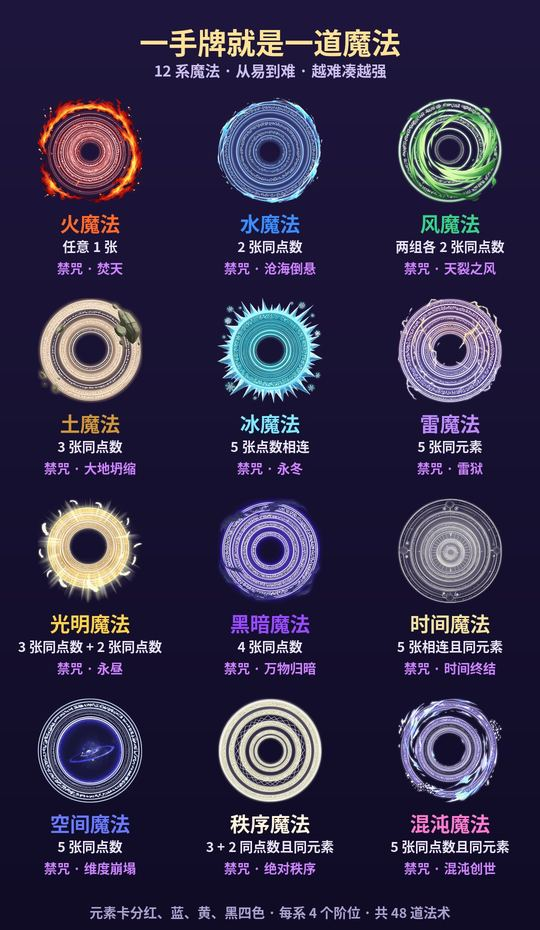
【实测：同一手牌，多选一张就换一系】
下面这张是游戏里真实录下来的一手。为了演示，我们特意摆了 5 张 A（正常的元素库每个点数四色各一张，第五张 A 得靠复制类道具才拿得到）。一张张选上去，上方的魔法名和数字会实时变化：
- 选 1 张：火魔法 · 火星，魔攻 5 × 增幅 1
- 选 2 张：水魔法 · 水弹，10 × 2
- 选 3 张：土魔法 · 石刺，30 × 3
- 选 4 张：黑暗魔法 · 暗影，60 × 7
- 选 5 张：空间魔法 · 折跃，120 × 12
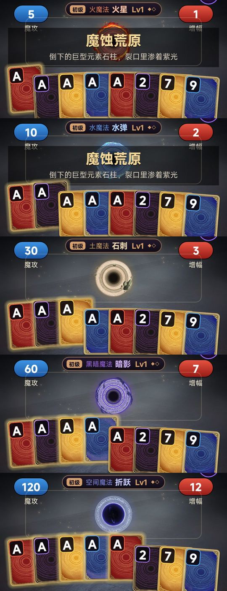
打出去以后，每张 A 再把自己的点数加进魔攻（图里的 +11），最后是 175 × 12 = 2,100 伤害。魔蚀学徒只有 300 生命，打出了 7 倍的「过量击破」。
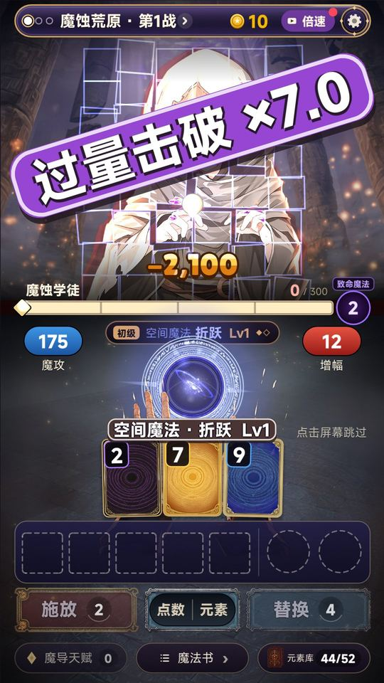
【三个上手小贴士】
- 不用背表：选牌的时候，魔法名和「魔攻 × 增幅」都会显示在上方，先点几张看看。
- 手气不好就「替换」：把不想要的元素卡换掉，再凑一手。
- 魔法会升级：在魔法商店买对应的魔法卷，这一系就升一级。Lv3 中级，Lv6 高级，Lv10 禁咒，咒名和演出都会跟着变。火星 → 火球 → 爆炎 → 焚天，这就是「从小火球到灭世禁咒」。
【留个小问题】
看完这张表，你第一眼最想凑的是哪一系？评论区说说～
【玩家群】
欢迎加入官方玩家群「手搓魔法：从小火球到灭世禁咒」：1131361528
加群链接：https://qm.qq.com/q/BgcIvl5NE4
第 2 帖 · 草稿 6871370 · 官方身份 · 综合 · 建议发布 11-11 周三 21:00
禁咒图鉴｜把一系魔法练到 Lv10，整个屏幕都归它（实机截图 6 张）
大家好，我们是 FIRE 工作室。上一篇开发日志聊了禁咒演出是怎么做出来的，这次不讲过程，直接上图。
下面 6 张都是游戏里真实放出来的禁咒全屏演出，没有后期加字，咒名就是游戏里砸下来的那两行。
【焚天 · 火魔法】
任意 1 张就能放的火魔法，练到头是一整片燃烧的天空。最好凑的一系，禁咒一点也不小。
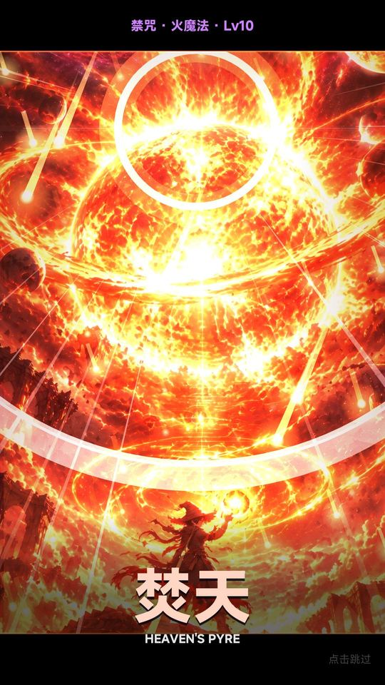
【沧海倒悬 · 水魔法】
整片海被掀到天上，卷成一道星河。两张同点数而已，练到 Lv10 就是这个排面。
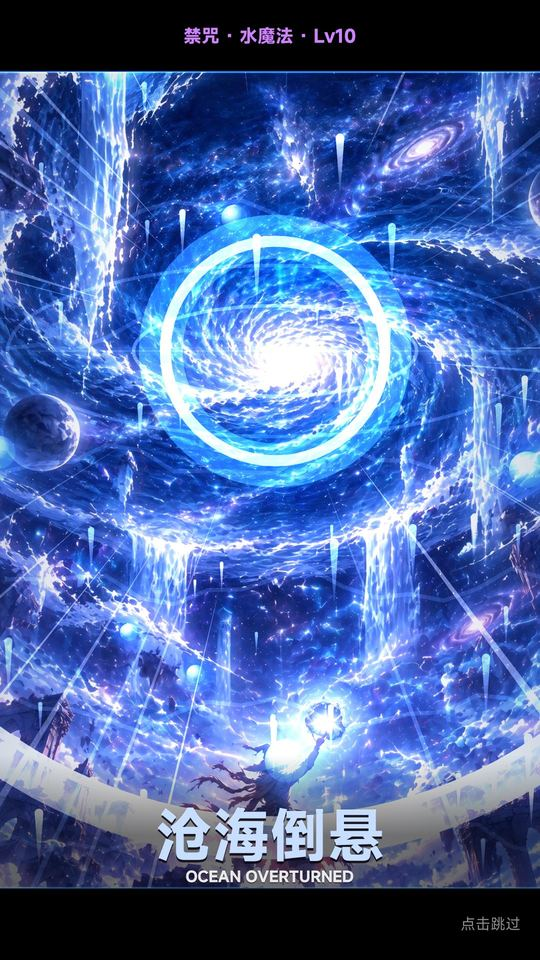
【永冬 · 冰魔法】
五张点数相连的冰魔法。天上悬着一颗冻住的星，冰晶从它身上一层层长出来。
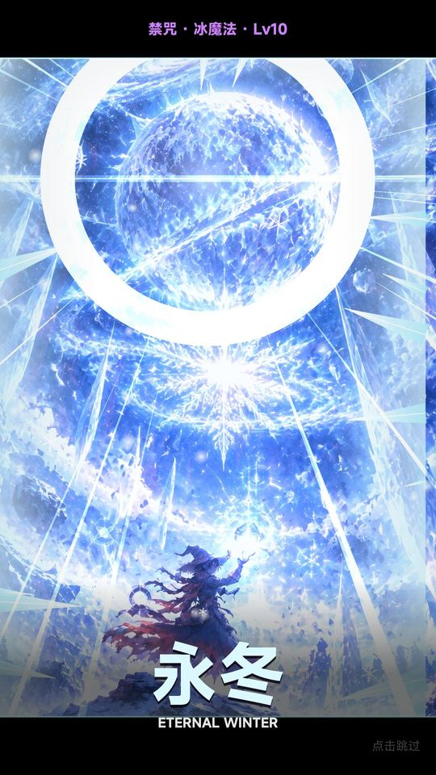
【雷狱 · 雷魔法】
五张同元素的雷魔法。紫色的雷把整片天封成一座牢笼，放的时候屏幕会一下一下地闪。
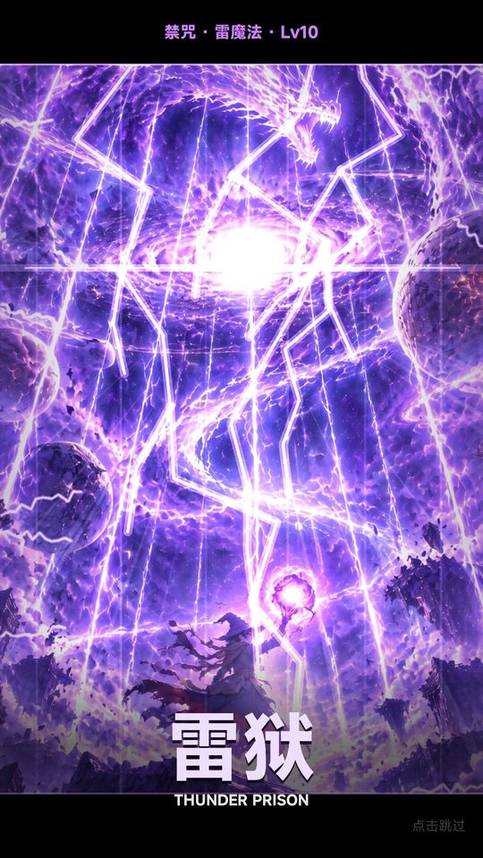
【维度崩塌 · 空间魔法】
五张同点数才放得出的空间魔法。画面会像玻璃一样裂开，一块块碎进虚空里。
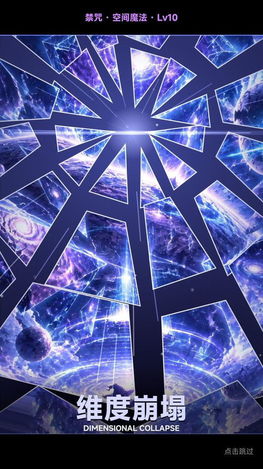
【混沌创世 · 混沌魔法】
最难凑的一系：五张同点数，还要同元素。演出也是 12 段里颜色最多、最亮的一段。
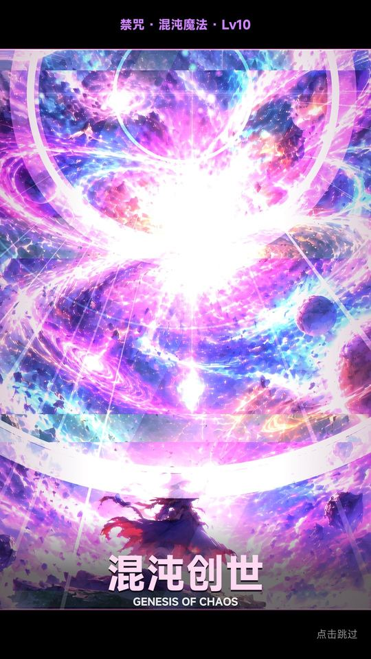
【还有 6 段，留给你自己去放】
风、土、光明、黑暗、时间、秩序，每一系都有自己的一段禁咒，就不在这里全剧透了。
几个大家可能关心的点：
- 禁咒要这一系练到 Lv10 才放得出。一局里靠魔法卷一级级往上升；在营地「唤醒」过的那一系，每次启程都会先高一级。
- 默认每次释放都会播放演出。嫌慢可以在设置里改成「每场首次」，演出中点一下屏幕也能直接跳过。
- 每段演出里的施法者都只是画面角落里一个小小的身影。你搓出来的东西，比你自己大得多。
【评论区见】
6 张里你最喜欢哪一张？还是更想看没放出来的那 6 段？说说你最想亲手放的那道禁咒～
【玩家群】
欢迎加入官方玩家群「手搓魔法：从小火球到灭世禁咒」：1131361528
加群链接：https://qm.qq.com/q/BgcIvl5NE4
第 3 帖 · 草稿 6871371 · 官方身份 · 综合 · 建议发布 11-13 周五 21:00
角色篇｜守泉人薇丝塔：她一直守在泉边，等你回来
大家好，我们是 FIRE 工作室。守关者图鉴里，我们留了一句话：营地源泉边的守泉人薇丝塔，总说「我替你收着」。今天单独给她写一篇，只讲你开局就能见到的那部分，不剧透。
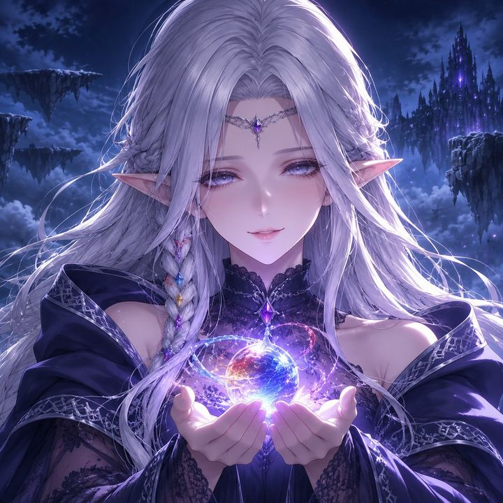
【她是谁】
登天之路的起点，是一处叫「源泉营地」的地方。营地中间有一眼泉，泉边站着一位银发的精灵，就是薇丝塔。
她介绍自己只用一句话：「我是守泉人。守着这处泉眼，也守着你。」
她闭上眼，就能看见源泉底的记忆。她说这是守泉人和源泉的约定。你走到了哪一关、手上又添了几道灼痕，不用开口，她都知道。
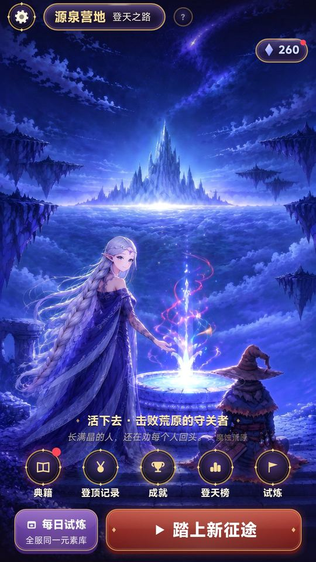
【她为什么守在泉边】
世界最高处的原初源泉正在枯竭，魔法一道道消散，土地一块块不见了。营地这眼泉，是你每次启程的地方，也是你回来的地方。
她说得很直白：「泉要是干了，你我都会散。……能让它再涌出来的地方，只有最上面。」
所以她不能跟你走。她得守着这眼泉，等你一次次出发，再一次次回来。
【她会为你做什么】
- 每趟征途结束，你有机会和她一起「唤醒」一系魔法。唤醒过的那一系，以后每次启程都先高一级。
- 她会替你缠好手上松开的绷带，把你忘掉的魔法一系一系还到你手里。
- 你每次回营地，她都会多说几句。有些话，她要等你走得更远才肯说。
「手给我。……绷带又松了，我替你缠紧些。」这是 CG「泉边的手」，第一次走到第 3 关后回营地就能看到。她的每一句台词都有配音。
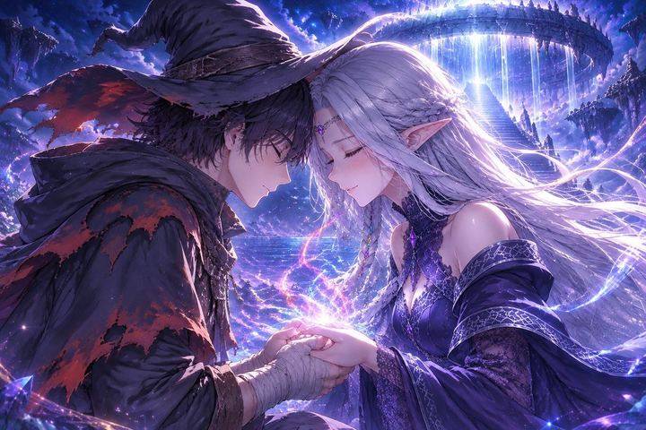
唤醒魔法时的那一幕：她握住你的手，把那一系的光还到你掌心。
【我们想把她做成什么样】
在我们心里，薇丝塔不是陪你冲锋的队友，是那个一直在原地等你的人。你在登天路上倒下、被打回营地的时候，第一个看到的会是她，然后她会说：「欢迎归来，魔导师。泉眼还在涌，你也还在。」
至于她为什么总说「我替你收着」，收着的又是什么，答案在登天路的上面。我们先不说。
【评论区见】
如果你回到营地，只能对她说一句话，你会说什么？
【玩家群】
欢迎加入官方玩家群「手搓魔法：从小火球到灭世禁咒」：1131361528
加群链接：https://qm.qq.com/q/BgcIvl5NE4
第 4 帖 · 草稿 6871373 · 官方身份 · 综合 · 建议发布 11-16 周一 21:00
来聊聊｜12 系魔法，你会先练哪一系？评论区报上你的流派
大家好，我们是 FIRE 工作室。开放游玩前想先做个小调查：12 系魔法摆在面前，你会先把哪一系练上去？
这事真得想一想。每一局你都要决定魔法卷先升哪一系；在营地，每系只能「唤醒」一次；魔力结晶也只够先「强化」几系的基础魔攻（每次 +20%，每系最多 10 次）。练什么，决定了你这一局怎么搓。
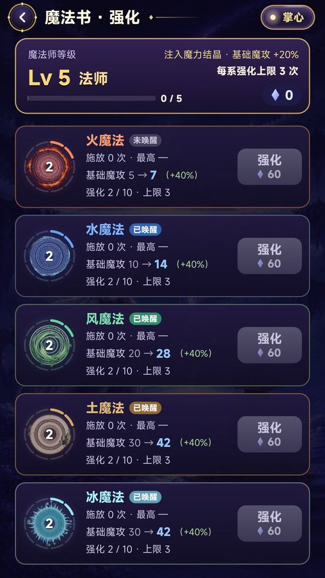
【先站个队：你是哪一派？】
- 稳扎稳打派：火 / 水 / 风 / 土。好凑，几乎每一手都能放，靠装备把倍率一层层叠上去。
- 一把梭哈派：冰 / 雷 / 光明 / 黑暗 / 时间。要攒对的牌才放得出来，一放就是大的。
- 改牌狂人派：空间 / 秩序 / 混沌。光靠发牌凑不齐，得用道具复制、改造元素卡，把元素库改成自己的样子。
不同派，路子完全不同：火魔法几乎每手都能放，空间、秩序、混沌一手就是一大波，但前期要先把牌改出来。
【两段禁咒，给想走远路的人】
秩序魔法练到 Lv10 是「绝对秩序」：整片天空被一圈圈金白色的法阵框住，一道光从正中间劈下来。
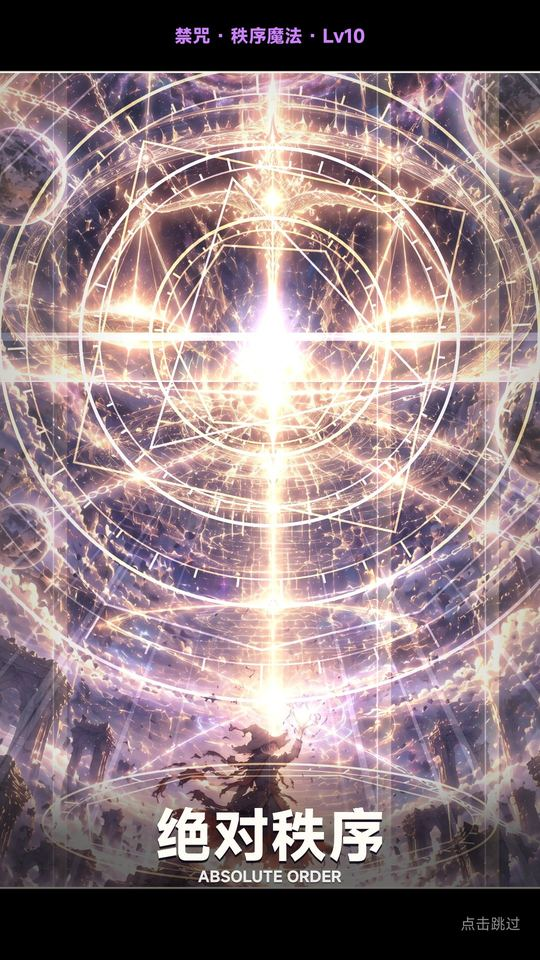
时间魔法练到 Lv10 是「时间终结」：天上的金色齿轮倒着转，时间被一圈圈拧回去。
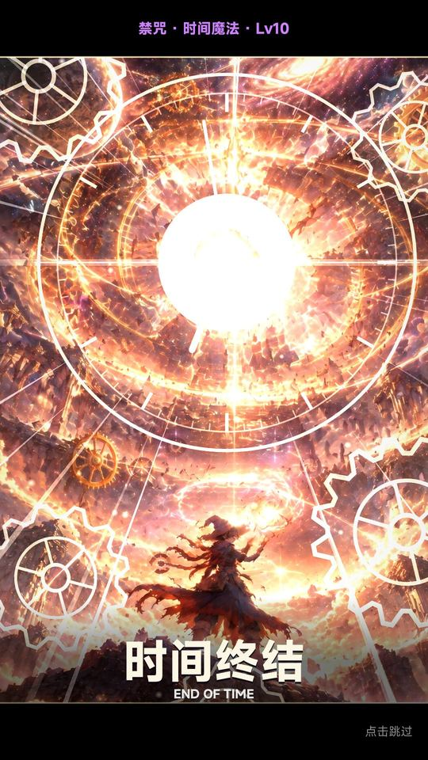
【评论区格式（照抄就行）】
我先练 ___ 系，因为 ___。
我想搓的最强组合：___ + ___（装备 / 道具随便写，想象的也算）。
开放游玩后，我们会从评论区挑一些有意思的思路，整理成一篇攻略帖。
【玩家群】
欢迎加入官方玩家群「手搓魔法：从小火球到灭世禁咒」：1131361528
加群链接：https://qm.qq.com/q/BgcIvl5NE4
第 5 帖 · 草稿 6871375 · 官方身份 · 综合 · 建议发布 11-18 周三 21:00（或定下可玩日期后，提前 2–3 天发）
预约答疑｜什么时候能玩？要不要氪？第一个能玩的版本里有什么？
大家好，我们是 FIRE 工作室。预约开了一阵，我们把大家最可能关心的几个问题，先在这里统一回答一下。
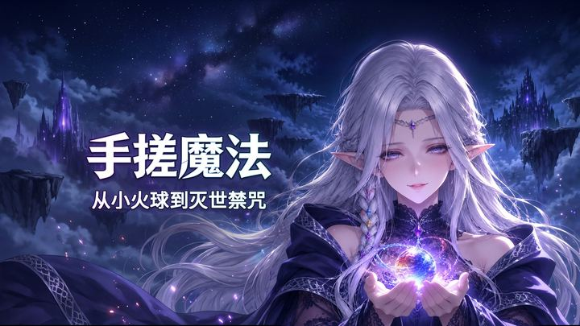
【Q：什么时候能玩？】
现在还在预约阶段。开放游玩的具体日期定下来以后，我们会第一时间在论坛发公告。点了预约的话，上线时 TapTap 也会提醒你，不用一直盯着。
【Q：要花钱吗？】
不用。游戏里没有内购，也没有任何付费。
广告只有你自己主动点的激励视频，比如再来一手、多换一次、开启倍速、守泉人的馈赠，看完才给奖励。没有插屏广告，施法和结算的时候不会突然弹出来。不想看，跳过就行。
【Q：第一个能玩的版本里有什么？】
下面这些都是游戏里已经做好的内容（帖子里的战斗和商店截图都是实机画面）：
- 12 系魔法、48 道法术，每一系练到 Lv10 都有一段禁咒全屏演出
- 八关登天之路：每关三战，前两战可以「绕过」换奖励签，第三战是守关者
- 八位守关者，各有专属的致命魔法、立绘和配音
- 150 件装备，加上魔法卷、元素改造这些道具，叠出属于你的流派
- 多种魔导流派可选，启程规则各不相同
- 源泉营地：守泉人薇丝塔、魔法唤醒、魔法书强化、典籍、成就、登天榜
- 每日试炼：全服同一个元素库，看看谁搓得更高
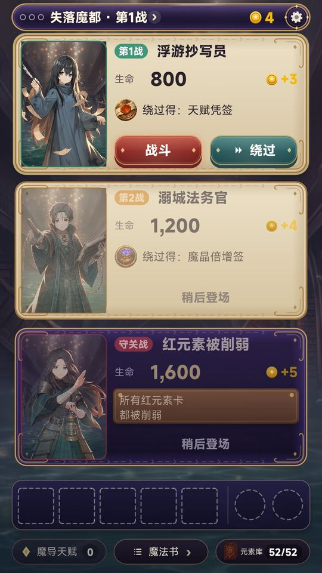
【Q：难不难？没玩过卡牌肉鸽能上手吗？】
能。第一局有新手引导，选牌的时候魔法名和「魔攻 × 增幅」会直接显示在上方，不用背规则。想先了解玩法的话，可以看我们之前的新手向帖子「一手牌就是一道魔法」。
【Q：要联网吗？横屏还是竖屏？】
单机竖屏，不联网也能玩，随时来一把。
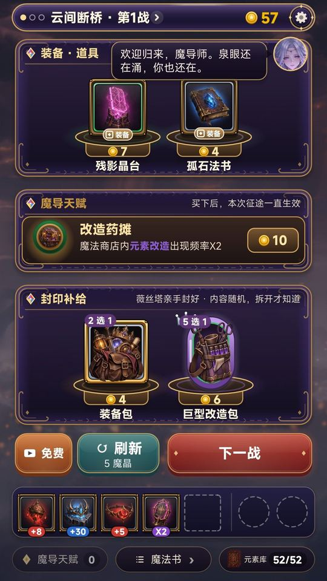
【Q：预约有奖励吗？】
目前没有预约奖励。我们不想写一个游戏里发不出去的东西，以后如果有活动，会先在论坛公告。
【Q：怎么反馈问题、提建议？】
论坛直接发帖，或者来玩家群找我们。之后每次更新，我们也都会在论坛发公告。
【最后】
如果你看到这里还没点预约，现在点一下吧。开放游玩那天，我们论坛见。
【玩家群】
欢迎加入官方玩家群「手搓魔法：从小火球到灭世禁咒」：1131361528
加群链接：https://qm.qq.com/q/BgcIvl5NE4